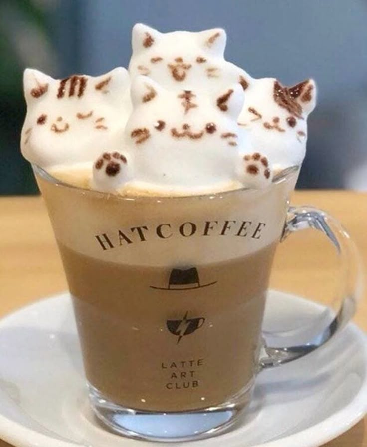
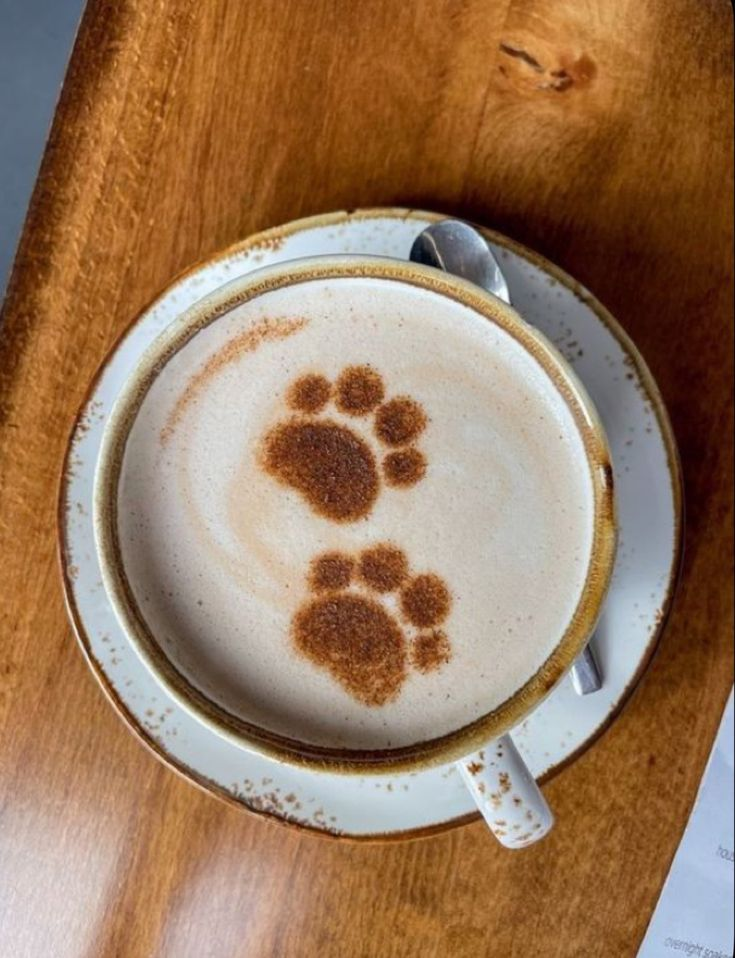
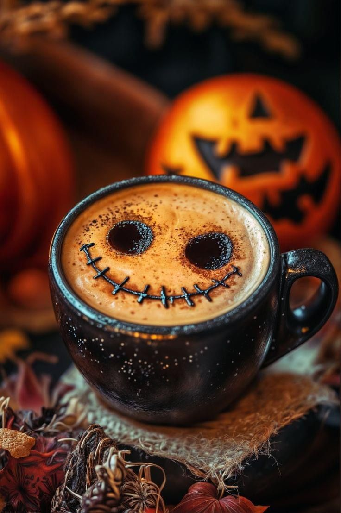
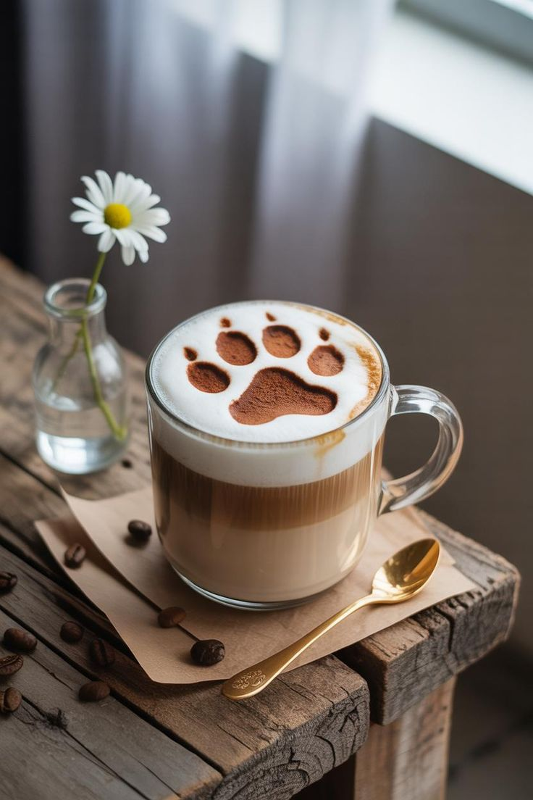
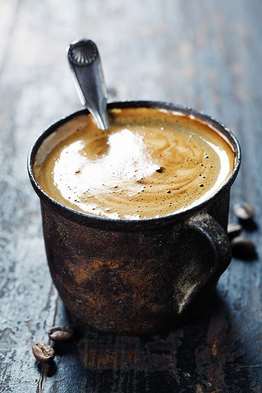

Our Coffee Menu
Catpresso
A short, strong shot of coffee. Great when you need a quick boost!

Chillppuccino
Smooth coffee topped with a big layer of soft, fluffy milk foam.

MachaLatte
Rich coffee mixed with warm, creamy milk. Simple and satisfying.

Overflow Catmeriano
Espresso with hot water added for a longer, bolder cup of coffee.

Paw's Brew
Cold, smooth, and a little sweet. The best drink on a hot day.

Hollowie
Coffee and chocolate in one cup. Sweet, rich, and super comforting.

Pawchiato
Strong espresso with just a tiny splash of milk. For the bold coffee lovers!

Indian White
Espresso and milk mixed together until silky smooth. Rich but not too heavy.
